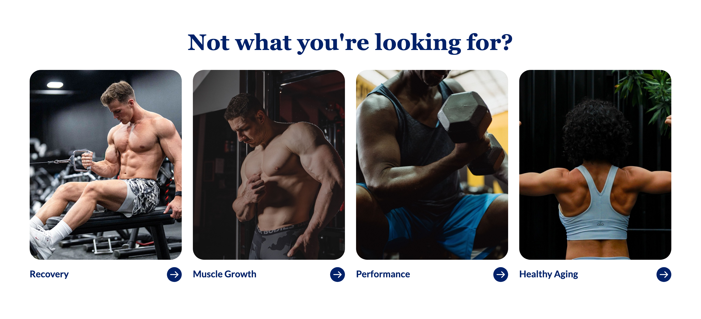
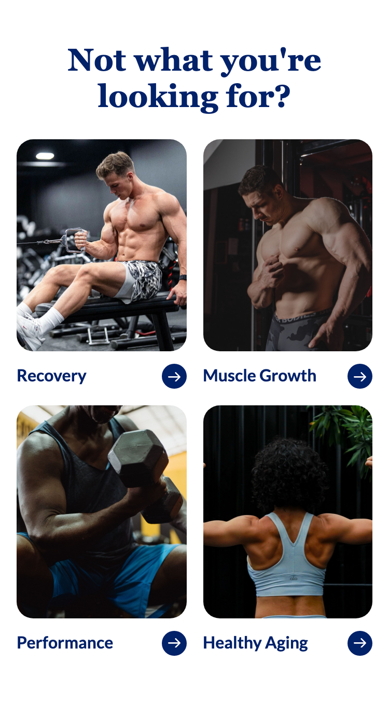
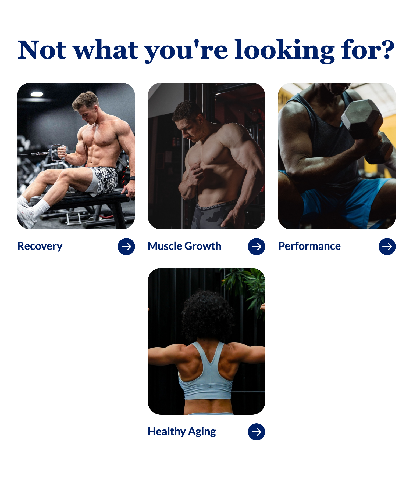
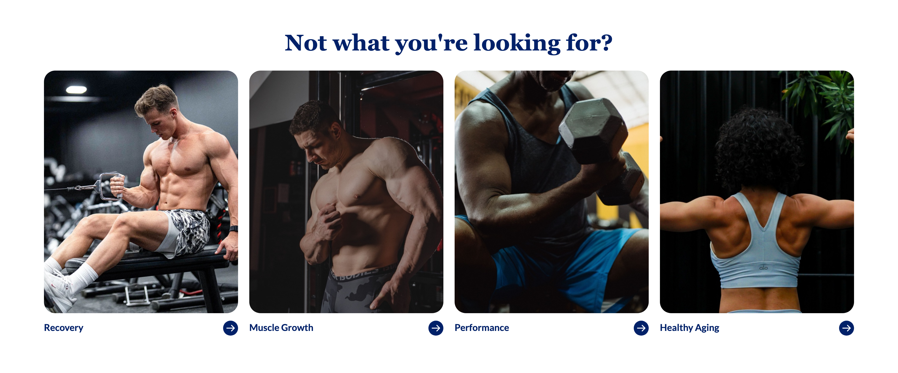

Platter component
Shop By Goal
Transcribed from Confluence, authored by Sarah Lee, page updated 2026-08-04. It is the client's spec, reproduced verbatim in substance. Where our implementation deviates it is recorded under Deviations, not by editing the spec.
Spec: https://getplatter.atlassian.net/wiki/spaces/TVS/pages/897220811/FSD+Shop+By+Goal
02 — Screenshots
How it renders
Captured by pnpm shots at 4 widths. Blank frames mean the captures have not been run in this checkout.




03 — Fields
What a merchandiser fills in
Generated from _schema.json, in the order Amplience shows them.
| Field | Type | Constraints | Description | |
|---|---|---|---|---|
headingHeading |
string | required | max 60 min 1 |
The line above the tiles, e.g. "Not what you're looking for?". Wrap words in _underscores_ for italic and **double asterisks** for bold. Write ~12~ for subscript; a registered mark (®) is raised automatically, and a plain asterisk is never formatting. It is centred and wraps rather than shrinking, so length costs height: the design's own 25 characters already run to two lines on a phone, and the 60 allowed here run to four before the first tile appears. |
headingLevelHeading level |
string | h1 · h2 · h3default "h2" |
Choose h1 only if this module is the first thing on the page and no other h1 exists. Otherwise leave it as h2 — two h1s on one page hurts SEO. Choose h3 when the module sits underneath a section that already has an h2, so the page's heading order stays unbroken. This changes nothing you can see: the size is set separately below. | |
headingSizeHeading size (desktop / mobile) |
string | 64px / 38px · 56px / 34px · 48px / 30px · 36px / 24px · 28px / 20px · 20px / 16pxdefault "48px / 30px" |
A fixed pair from the TVS type scale — the first size applies from tablet up, the second on phones. | |
headingFontHeading font |
string | Lato · corisanderegular · Fieldsdefault "Fields" |
Fields is the serif this module is designed in and is the default. It is not yet installed on vitaminshoppe.com, so until it is, the heading falls back to Georgia — still a serif, but not the exact drawn face. Pick Lato if you would rather the heading match the rest of the site exactly than approximate the design. | |
goalsGoal tiles |
array | required | Between two and eight tiles, shown in the order you list them here. Drag a row to reorder it. On desktop they all share one row and divide the width between them, so four tiles are large and eight are small — the layout never wraps or leaves a gap, whatever the count. Tablets show three per row and phones two, with a short last row centred. | |
priorityPrioritise image loading |
boolean | default false |
Switch on when this module is the first thing on the page, so the first tile's photo loads immediately instead of lazily. The remaining tiles always load lazily — they are never the first thing a shopper sees. | |
sectionIdSection ID |
string | max 50^[a-z][a-z0-9-]*$ |
A name for this specific module, used for two things. A link anywhere on the site can jump straight to it by ending the URL with # and this name, e.g. #shop-by-goal. Page-level CSS can also target this one module rather than every Shop By Goal. Use lowercase letters, numbers and hyphens, start with a letter, and make it unique on the page — two modules sharing an ID will break the jump link. Leave empty if you need neither. |
04 — Sample content
A filled-in example
From _content.json. This is what the screenshots above are rendering.
{
"heading": "Not what you're looking for?",
"headingLevel": "h2",
"headingSize": "48px / 30px",
"headingFont": "Fields",
"goals": [
{
"image": "../assets/goal-recovery-656.jpg",
"imageAlt": "A man seated at a cable machine mid-row in a dimly lit gym",
"ctaLabel": "Recovery",
"ctaUrl": "/c/recovery"
},
{
"image": "../assets/goal-muscle-growth-656.jpg",
"imageAlt": "A man standing beside a weight rack, one hand on his chest",
"ctaLabel": "Muscle Growth",
"ctaUrl": "/c/muscle-growth"
},
{
"image": "../assets/goal-performance-656.jpg",
"imageAlt": "A man in a tank top curling a heavy dumbbell",
"ctaLabel": "Performance",
"ctaUrl": "/c/performance"
},
{
"image": "../assets/goal-healthy-aging-656.jpg",
"imageAlt": "A woman photographed from behind in a sports bra, shoulders flexed",
"ctaLabel": "Healthy Aging",
"ctaUrl": "/c/healthy-aging"
}
],
"priority": false,
"sectionId": "shop-by-goal"
}05 — Design reference
Design reference
| Layout | Desktop | Mobile |
|---|---|---|
| 4 tiles | Figma 18228:437711 — 1512 × 692 | Figma 18228:437720 — 375 × 689 |
| 6 tiles | Figma 18251:467081 — 1512 × 545 | Figma 18251:467148 — 375 × 945 |
Within each pair the 4-tile and 6-tile frames are byte-identical apart from tile count and the tile width that follows from it. Both desktop frames satisfy tile = (1384 − 24 × (n − 1)) / n, image height = tile × 1.25, tile height = image + 16 + 32. Both mobile frames are two columns whatever the count.
No breakpoint or browser-size variable is bound to any of the four frames, and there is no tablet frame — see the Tablet tier deviation.
Section
| Desktop | Mobile | |
|---|---|---|
| Background | #FFFFFF | #FFFFFF |
| Padding | 64 top / 64 sides / 80 bottom | 40 top / 16 sides / 56 bottom |
| Heading → grid gap | 32px | 24px |
| Content width | 1384 at a 1512 frame; Page Width = 1860 max, set on the header only | 343 |
Heading
| Desktop | Mobile | |
|---|---|---|
| Style | richtext-md/H1/bold fields | richtext-md/H1/bold fields |
| Family | Fields (typography/family/primary) | Fields |
| Size / line-height | 48px / 1.2 | 30px / 1.2 (wraps to two lines) |
| Weight | 700 | 700 |
| Letter-spacing | 0 | 0 |
| Colour | #012169 (sections/text-main) | #012169 |
| Align | centre | centre |
| Copy in the frames | Not what you're looking for? | same |
The Section Header component has slots for a reviews badge, labels, preheading, subheading, description and actions. All are hidden in every frame — this section is a heading and nothing else.
Grid
| Desktop | Mobile | |
|---|---|---|
| Columns | one row of n, tiles Fill (flex: 1 0 0) | 2 |
| Column gap | 24px | 16px |
| Row gap | n/a — single row, no wrap | 16px |
Goal tile
| Desktop | Mobile | |
|---|---|---|
| Tile radius / padding | none | none |
| Image → label gap | 16px | 12px |
| Image ratio | 4:5 (240 × 300), object-fit: cover | 4:5 |
| Image radius | 24px | 16px |
| Label row height | 32px, driven by the arrow | 24px |
| Label → arrow gap | 12px, label column Fill so the arrow sits hard right | 12px |
| Label style | richtext-md/H4/bold lato — Lato 700, 20px / 1.4, #012169, left | Lato 700, 16px / 1.4 |
Arrow button
Figma icon-button-primary, Mode=Light, State=Default. Desktop main component 10264:106044 (32px), mobile 10264:106076 (24px).
| Desktop | Mobile | |
|---|---|---|
| Diameter | 32px, fixed | 24px, fixed |
| Radius | fully round | fully round |
| Fill | #012169 (colors/brand colors/dark blue) | #012169 |
| Icon frame | 24px (arrow-narrow-right) | 16px |
| Glyph | 18 × 14, #FFFFFF | 12 × 9.33, #FFFFFF |
The glyph is 75% of the icon frame at both sizes, but the icon frame is not a constant fraction of the circle — 24-in-32 on desktop, 16-in-24 on mobile. So the glyph is 56.25% of the circle on desktop and 50% on mobile, and treating the mobile arrow as a proportional scale of the desktop one oversizes it by 27%.
Glyph path, viewBox="0 0 18 14", exported verbatim rather than redrawn:
M11.7071 0.292893C11.3166 -0.0976311 10.6834 -0.0976311 10.2929 0.292893C9.90237 0.683418 9.90237 1.31658 10.2929 1.70711L14.5858 6H1C0.447715 6 0 6.44772 0 7C0 7.55228 0.447715 8 1 8H14.5858L10.2929 12.2929C9.90237 12.6834 9.90237 13.3166 10.2929 13.7071C10.6834 14.0976 11.3166 14.0976 11.7071 13.7071L17.7071 7.70711C18.0976 7.31658 18.0976 6.68342 17.7071 6.29289L11.7071 0.292893Z
The component carries a vestigial 48px / 20px internal padding that its fixed diameter overrides; it renders nothing and is not ported.
No hover, focus or pressed variant is placed or annotated in any of the four frames, and no interaction is defined on the tile itself.
06 — User requirement
User requirement
- User can click a goal tile to navigate to another category or landing page.
07 — Admin requirement
Admin requirement
| Content Type | Functional Requirement | Asset/Copy Requirement | Responsive & Content Behavior |
|---|---|---|---|
| Heading (Required) | Admin can edit the section heading | ||
| Goal Tile (Required, 4 or 6) | Admin can add/edit goal tiles. Each tile includes: 1. Image 2. Label 3. Destination URL | Image aspect ratio: 4:5 | Desktop: Tile size is not fixed -- it scales based on the number of tiles added, so tiles fit the screen width accordingly (e.g., 5 tiles render larger than 6 tiles at the same viewport). Tablet: Display 3 tiles per row, center aligned when there are more than 1 row. Mobile: Display 2 tiles per row |
08 — Other requirements
Other requirements
- Analytics: component supports automated impression tracking (viewport entry) and click tracking via the standard
raiseEventhandler.
09 — Open comments
Open comments
Sarah Lee — unanswered 2026-08-07
unanswered 2026-08-07
The Goal Tile row is internally inconsistent about how many tiles are allowed. The row header reads "Required, 4 or 6", while the Responsive cell in the same row gives the example "5 tiles render larger than 6 tiles at the same viewport" — which only makes sense if 5 is permitted. The Figma provides 4-tile and 6-tile frames only.
Built as a 2–8 range on the reading that the Responsive cell describes the real intent and the header is shorthand for the two frames that were mocked. If the count is genuinely meant to be 4 or 6 exclusively, say so — JSON Schema can constrain a range but not an either/or, so enforcing it means the template refusing to lay out anything else.
Sarah Lee — unanswered 2026-08-07
unanswered 2026-08-07
The heading in all four frames is set in Fields (typography/family/primary in the Design System V2 library). Fields is not a typeface vitaminshoppe.com loads: it appears in none of the ten TVS landing-page templates we downloaded, which declare only Lato, and it is not among the four values in Chirag Mehta's 2026-07-29 font spec (Lato, corisanderegular, corisandelight, corisandebold). Please confirm whether Fields is being added to the site's @font-face set, or whether Corisande is the intended production stand-in for it. See the Heading typeface deviation for what we shipped meanwhile.
Design — unanswered 2026-08-07
unanswered 2026-08-07
The first tile of each of the four frames carries a full-bleed rgba(0, 0, 0, 0.2) scrim over its photo, matching the image's corner radius. Tiles 2–n have none. It reads like either a hover/pressed state that was left switched on, or an artefact of that particular placeholder photo. Not built — please confirm which it is. If it is a hover state, we need it as a variant rather than a static overlay.
Design — unanswered 2026-08-07
unanswered 2026-08-07
No tablet frame exists for this section, but the FSD specifies tablet behaviour (3 per row, centre-aligned on multiple rows). We chose the band ourselves — see the Tablet tier deviation — and would rather match a drawn frame.
TVS — unanswered 2026-08-07
unanswered 2026-08-07
Impression analytics: the FSD asks for viewport-entry tracking, but no impression event name appears in any of the ten downloaded TVS templates. We need the event name and payload shape from TVS before this can be built. Carried forward from Slim Hero Banner A and the Expert Module — the same gap blocks all three.
10 — Deviations
Deviations
Recorded so the gaps are visible rather than forgotten.
Tile count — 2 to 8
Built minItems: 2, maxItems: 8
Resolves the contradiction raised in the first Open comment above. The Responsive cell's own example ("5 tiles render larger than 6") requires counts the row header excludes, and the same cell states the tile size "is not fixed — it scales based on the number of tiles added", which is a formula rather than an enumeration. Built as a range so the design's own rule is what governs.
The bounds are ours: below 2 the section is a single tile and the grid is pointless; above 8 the desktop row divides 1384px into tiles under 145px, where the 20px label no longer fits beside a 32px arrow. Neither bound is in the spec.
Both ends of that range are legal and neither looks like the mock, which is worth stating plainly rather than discovering in QA. The design was drawn at 4 and 6, and "tile size is not fixed" taken literally means 2 tiles are 680px wide with an 850px-tall photo each — a module about 1,000px deep holding two pictures. Nothing is broken, and capping the width would contradict the spec sentence the whole layout is built on, so it is left as the spec asks. 4 to 6 is the range the design actually supports; the field description tells a merchandiser that four are large and eight are small, but it cannot stop someone choosing two.
Tablet tier — a third breakpoint
Built 2 per row below 768, 3 per row 768–1023, one row from 1024
The FSD names tablet behaviour explicitly, so this is spec rather than invention — but Figma draws no tablet frame, so the band edges and every value inside them are ours. Both other sections in this repo are two-tier mobile/desktop pairs switching at md (768); sections/CLAUDE.md records that the 768–1200 band is undrawn in every design we have been given, and that the Expert Module shipped a bug from applying desktop values at 768.
lg (1024) is the column switch rather than md, for the reason that file gives: at 768 a six-tile row would divide the content width into ~104px tiles.
The two switches are at different widths, which is the part worth knowing. Only the column count moves at lg; every other value moves at md, so the tablet band gets the desktop card chrome rather than an interpolated set of its own:
| below 768 | 768–1023 | 1024 and up | |
|---|---|---|---|
| Columns | 2 | 3 | one row of n |
| Section sides | 16 | 32 | 64 |
| Section top / bottom | 40 / 56 | 64 / 80 | 64 / 80 |
| Heading → grid | 24 | 32 | 32 |
| Grid gap | 16 | 24 | 24 |
| Image radius | 16 | 24 | 24 |
| Image → label | 12 | 16 | 16 |
| Label size | 16 | 20 | 20 |
| Arrow | 24 | 32 | 32 |
Splitting them that way means only one value in the whole section — the 32px side padding at md — is invented rather than measured. At 768 the tiles are already ~219px across three columns, much nearer the desktop 328 than the mobile 163, so giving that band the mobile card chrome would have undersized it. The rendered tablet frame is 901px tall against 900.7 computed, which is the arithmetic confirming it.
"Center aligned when there are more than 1 row" is a centred last row, which is why the grid is flex-wrap and not a CSS grid — a grid cannot centre a short final row. Four tiles render 3 + 1 centred, five render 3 + 2 centred.
Heading typeface — Fields is not available
Built headingFont defaults to Fields, which falls back to Georgia
See the second Open comment. Fields is a Design System V2 family with no @font-face on vitaminshoppe.com and no entry in the client's own font list. It is nonetheless the default here, on Felix's call: it is the designed face, so every content item is already correct the moment TVS supplies the file, with no merchandiser having to revisit anything. Until then the stack resolves to Georgia — a serif, so the module reads as designed rather than wrong.
Georgia rather than Corisande as the stand-in, even though Corisande is TVS's own serif: the headingFont description a parallel session had already shipped tells merchandisers it falls back to Georgia, and the stack and that copy must not drift. Worth revisiting with the client, since Corisande is the closer match and is actually hosted.
Corisande, when chosen, resolves to corisandebold rather than corisanderegular at weight 700 — it ships one weight per family name, so asking for the regular family and setting 700 gives a browser-faked bold.
Font selection became a shared mechanism
Built 2026-08-07, on Felix's direct request
Not a deviation from this FSD, recorded because this section is where the change landed and it reaches beyond it.
Each section had been restating the value-to-typeface mapping in its own template — Slim Hero carried a two-branch ternary, Benefits Highlight a three-branch one — which put a non-obvious rule (the Corisande weight quirk above, and Fields' fallback chain) in as many places as there are sections, with six in flight. The three stacks are now declared once on .tvs-platter in base.css as --plx-font-family--lato, --plx-font-family--corisanderegular and --plx-font-family--fields, and every section resolves the choice by lookup on the enum value instead.
The fallback inside each section's lookup is that section's own designed face rather than null — an omitted key would otherwise resolve to the Tailwind config's Lato, which is right for Slim Hero and wrong here. Slim Hero was migrated as part of this change and renders identically; the FAQ and Testimonials sessions adopted it independently.
Adding Fields to the shared headingFont enum was done by the Benefits Highlight session, not here — this section only consumes it and sets the default.
Heading size — merchandiser-selectable
Built the shared 6-pair enum, defaulting to 48px / 30px
The FSD's Heading row is functional requirement only, with both the Asset/Copy and Responsive cells empty, so nothing in the spec fixes the size. The frames' own values are 48px desktop and 30px mobile, which is exactly the shared vocabulary's default pair — the field is therefore the standard one and the design is what a merchandiser gets without touching it.
Heading level
Built h1 | h2 | h3, default h2, changes nothing visual
Not in the spec. Required by FSD: Global SEO Rule and by the accessibility bar this repo holds itself to: the heading order on a page has to stay unbroken regardless of where the module is placed, and that is a different decision from how large the heading looks.
The whole tile is the link, not just the arrow
Built one <a> wrapping image, label and arrow
The User requirement says a user clicks a goal tile, not an arrow, and the arrow carries no interaction of its own in Figma. Built as a single anchor per tile so the hit area is the whole card and screen readers announce one link rather than an image link plus a nameless button. The arrow is decorative (aria-hidden) and is the affordance rather than the control. Same reasoning as the Expert Module's play button, where the FSD's "clicking the video" made the media the hit area.
Tile image has no mobile crop
Built one image per tile, one imageAlt
The vocabulary's imagePair offers a separate phone crop; this section does not use it. The tile is 4:5 at every breakpoint — only its width changes — so a second crop would be the same picture at a different size, which is a CDN concern rather than a merchandiser one. Adding it would put four extra fields in a repeater row that already has three.
Arrow button is a new component class
Built components/goal-tile.css, class .goal-tile__arrow
components/icon-button.css already exists but is a different skin: a 48px translucent-black circle with a white hairline and a backdrop blur, drawn from the Expert Module's Figma. This one is a solid #012169 circle at 32px/24px with no border. Nothing but the roundness is shared, so a modifier would have overridden every declaration.
Section-scoped BEM rather than a shared .arrow-button, because that is the pattern .product-carousel__arrow and .benefit-tile__icon had already set — TVS's icon-button-primary is now the third solid navy circle in components/. A shared class is the right end state and is worth revisiting once those sections land; doing it during this one meant editing two files other sessions were still writing.
Two things differ from the carousel's version and are load-bearing. This one is a <span> inside the tile's <a>, not a <button>, so TVS's .site-wrapper button { width: auto; padding: 10px } never applies and there is no two-class escalation to write — a nested <button> inside an <a> is also invalid, and a screen reader should hear one link per tile rather than a link plus a nameless control. And the glyph is sized at 56.25% of the circle rather than in px per breakpoint, which is Figma's 18-in-32 exactly, holds at 24, and survives an override of the diameter.
Hover and focus are both ours — Figma places every instance at State=Default and draws neither. Hover moves the circle to the existing brand-blue, adding no new colour, and is guarded by @media (hover: hover) so a tap does not leave it stuck lit.
Section ID and image priority
Built both optional, neither in the spec
Standing additions across every section in this repo rather than decisions taken here. sectionId puts a merchant-chosen id on the section root, serving both in-page jump links and page-level CSS targeting. priority switches the first tile's image to eager loading with a high fetch priority for when the module leads the page — it applies to the first tile only, since the rest are never the LCP element.
Analytics — click
Built raiseEvent('ItemClick', item, 'Shop By Goal') on each tile
Same shape as the other sections: a page-level global reached by bare identifier exactly as TVS's own components do, guarded by typeof so a page without the handler cannot swallow the navigation. The payload keys are the shared ones — ctaLabel carries the tile label, destinationUrl the tile's URL, and moduleTitle the section heading, so one handler reads the same fields for every Platter module. Unverified against a real LP.
Analytics — impression (viewport entry)
Not built
See the last Open comment. No impression event name appears anywhere in the ten downloaded TVS templates — only ItemClick and the ATC event. Building one means inventing a name TVS's handler would ignore.
First-tile scrim
Not built
The rgba(0, 0, 0, 0.2) overlay on tile 1 of each frame. Not built pending the third Open comment; if it turns out to be a hover state it belongs in arrow-button.css's neighbouring tile rule rather than as a content field.
Structured data per module
Not built
Required by FSD/globals.md; deferred by agreement, as on every other section.